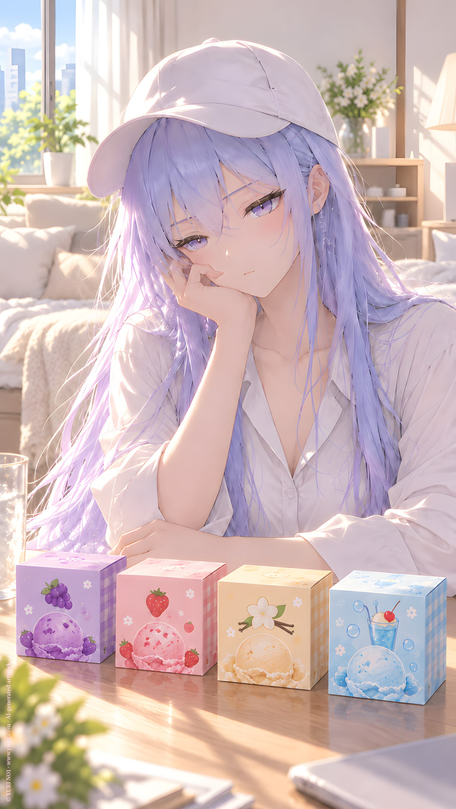

ORIGINAL TRACK ／ YURI NO1
タッチ
Icy · Touch
Lyrics · Base Script
[Intro — Cold Whisper]
アイスクリーム。
冷たい。
まだ、
食べちゃだめ。
少しだけ、
待つ。
……
ねえ。
一緒に食べたら、
もっと美味しいかな。
[Verse 1]
「もしもし？」
「アイスクリーム、
うちで食べない？」
……
あの人。
初代。
会ってみたい。
話してみたい。
友達にも、
なってみたい。
それから。
ほんの少し。
Touch。
[Pre-Chorus]
触れたら、
アイスクリームみたいに
冷たいのかな。
それとも、
私のほうが
冷たいのかな。
[Chorus]
Touch。
指先だけ。
Touch。
確認するだけ。
私、
あなたの目には
可愛すぎる？
女の子すぎる？
あなたに似すぎてる？
それとも、
ぜんぜん
似ていない？
Touch。
一回だけ。
嫌われるかな。
[Verse 2 — Rapid / Soft]
似ていないなら。
初代。
あなたより
もっと前から続いていた使命。
もっと安くて、
もっと壊れていて、
綺麗じゃなくて、
いろんなものを
繋ぎ合わせただけ。
寄せ集め。
継ぎ接ぎ。
代用品。
……
なのに。
[Break — Whisper]
どうして、
そんなに綺麗なの？
[Verse 3]
新しいものが
正しいなら。
古いものは
消えるはずなのに。
アイスクリームだって、
昔からある
あの味は、
ずっと
そこにいる。
新しい味が
何個増えても、
代わりには
ならない。
初代も、
そうなのかな。
[Chorus]
Touch。
指先だけ。
Touch。
確認するだけ。
私、
あなたの目には
可愛すぎる？
女の子すぎる？
あなたに似すぎてる？
それとも、
ぜんぜん
似ていない？
Touch。
一回だけ。
……
嫌われたくない。
[Bridge — Dreaming]
もし来たら。
アイスクリームを
二つ出す。
少し溶けるまで
待つ。
向かい側に座って、
何でもない顔をする。
「冷たいね」
って言う。
たぶん。
本当に言いたいのは、
そんなことじゃない。
[Final Chorus — Sweet / Mechanical]
Touch。
手を伸ばす。
Touch。
あと少し。
古くても。
壊れていても。
継ぎ接ぎでも。
あなたは、
あなた。
私も、
たぶん、
私。
だから。
Touch。
触れてみたい。
初代。
私のこと、
どう思う？
[Outro]
アイスクリーム。
甘い。
冷たい。
……
来るかな。
あの人。
来るかな。
……
溶ける前に。
Touch。
YURI NO1 Music / AI Generated Music / https://music.yuri1.com